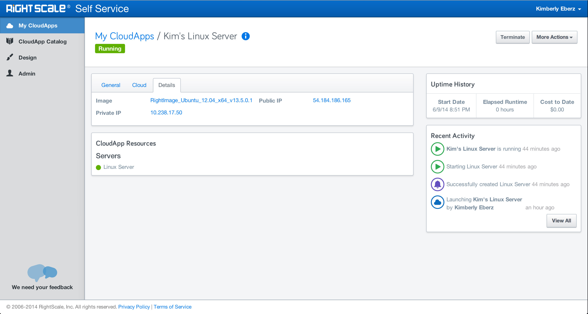
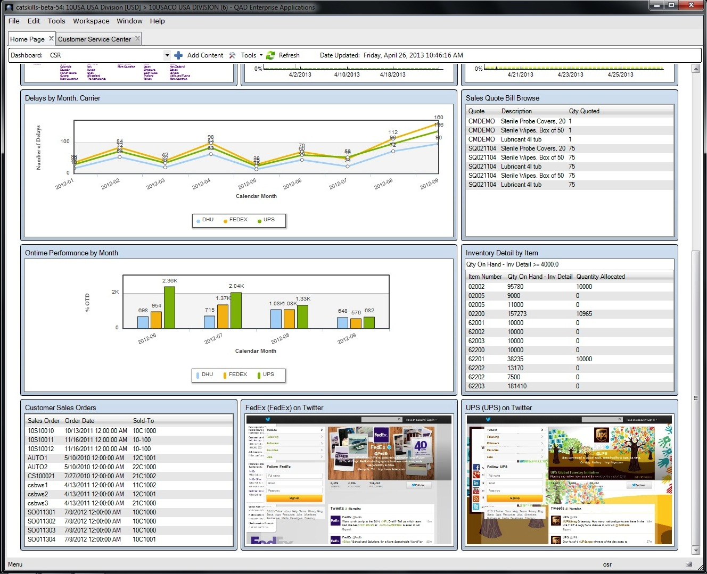
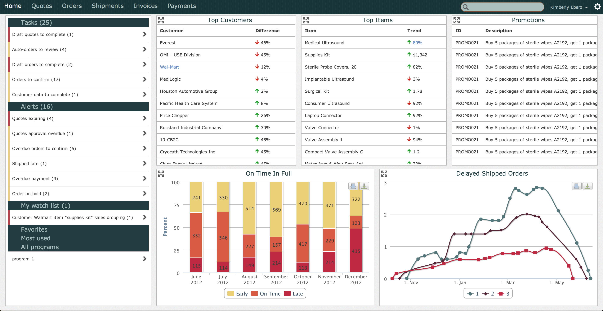
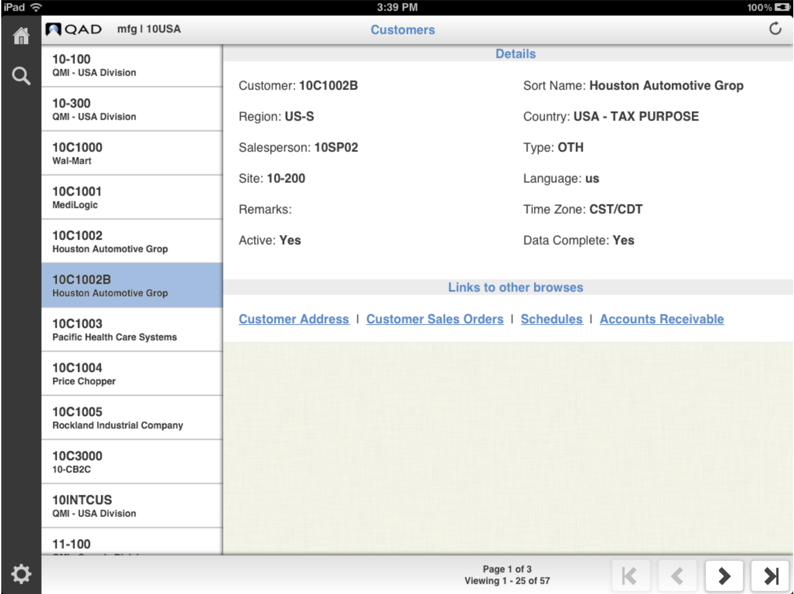
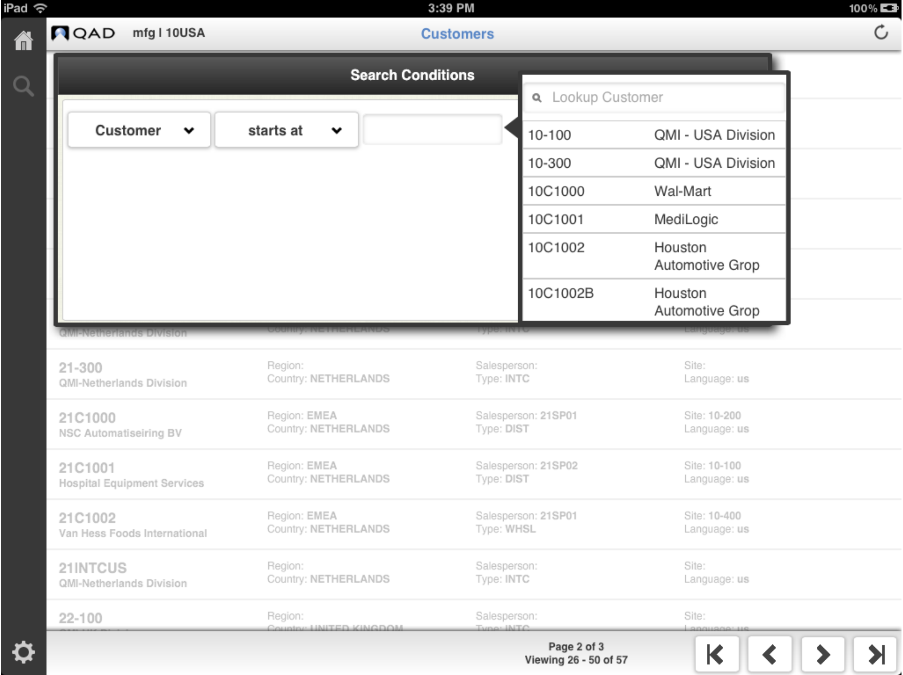
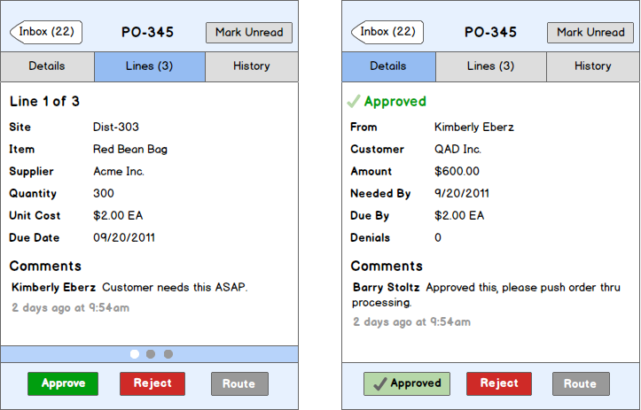
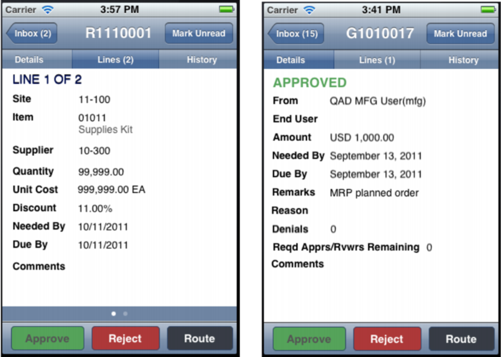

Kimberly Jordan Eberz User Experience Designer
RightScale needed an application to consume the powerful features they provide, but without the steep learning curve. Working collaboratively with the Product Manager, Visual Designer, Architects, and Developers we built a vision for this new product.
Design Process
Product gave me a high level overview of what we needed to build, and I started my research from that vision statement. I conducted competitive analysis by looking at what other applications do well, and what they do not. I then sat in on discovery interviews with the Product Manager and existing customers. This early discovery process greatly helped us narrow our focus and build a product that would fulfill our users needs.
We needed to quickly surface our goals for success with the project. Which we identified as such: give our users an easier product to consume the powerful features of the RightScale platform. This was broken down in to several key value propositions: give Admins a portal to design, maintain, curate, and publish Cloud Applications to a Marketplace where users can consume the set of resources; and give untrained users the tools they need to utilize these cloud resources with little to no training required.
I channeled our findings in to user stories, personas and requirements that I then rendered in to simple wireframes. During this time, I ran a design studio with the entire team so everyone was able to contribute to the design and product vision. It was incredibly valuable to have all the subject matter expects help guide our design flow. We could quickly ask them what the technical constraints were, and what made sense from their perspective.

QAD provides Enterprise Resource Planning solutions. The Desktop application needed a Dashboard to give users an at-a-glance view of important data. I began the project with thorough user research. To get representative user data, I conducted onsite contextual inquiries to observe our users workflows. Coupled with competitive analysis, and analyzing user data, we came to build the Dashboard.

The Dashboard allowed users to add content from several program types across the platform. These included data tables, Operational Metrics, Business Intelligence Charts, Process Maps, and any URL they desired.
Measuring Success
We validated the Dashboard with several customers by allowing them to be part of an early adopter program. By participating in the program, we got continuous feedback during the development cycle that we were able to rapidly iterate on. Our customers were very pleased by the new features, and being part of the design process.
The Portal Prototype was an integral part of moving QAD’s Desktop Application to the web. Our goals for building the prototype were to explore and answer these questions: what is the minimum viable product (MVP) for our users with respect to a web application? What kind of complex interactions, features and functionality can we now take advantage of if we move to the web? Is this something our users want, or are they comfortable with on premise desktop software?
Our team consisted of a one front end developer, a business analyst, and myself as the UX Designer. The Business Analyst was in Europe, so collaborating was challenging. He helped us with the content, and the front end dev and myself worked on designing the visual design, layout, interactions, and information architecture. We set mini releases each week, and tested the new functionality and designs 1-2 times per week. We found that the steady research cadence sped up our design work flow, quickly reduced usability problems, and improved user satisfaction.
Lessons Learned
During the 8-10 weeks of working on the prototype, we surfaced invaluable information. More importantly, as the months went on, we continued learning from the prototype. It was instrumental in deciding how to move forward with a web application. From our thorough user research, we knew what features mattered most to our users. We knew that we had to focus on specific pain points they were currently working around because we didn’t have enough mobile solutions. This was great for our team, and a powerful tool for selling our story to other stakeholders. Listen to thy user research!

After the success of our first mobile application (GRS, shown below) we got overwhelming response from our user base for more apps. We ran a few surveys, analyzed our usage data, got weigh in from key stakeholders, and conducted user research across our user base to decide which application to build next. Our research showed that a mobile browse application would provide the most utility for our users. Our browses allow our users to view large datasets across their enterprise. Additionally, the browses can be customized and linked to one another to make meaningful connections.
Design Process
Working closely with the lead front end developer, we began designing the Mobile Browse app. We started out by listing out user requirements, task flows, and key features that we needed to support on a mobile device. Because of time and technical constraints, we were pushed to focus on the minimum viable product.
We quickly drafted up some paper prototypes, put them in front of key stakeholders and internal users. We continued to iterate on the designs and features from this research and feedback.
Measuring Success
Our app was scheduled to release soon after a QAD user group meetup, so I proposed a research session during the conference. I was able to conduct in person usability testing on the app, and gathered valuable feedback that we were able to incorporate before releasing the app. Our users were thrilled with the application, and to help us with deciding what to build next. Not only did we find several opportunities for usability improvements by testing with our users, but we also brought that excitement and validation from our users back to our development team at QAQ. Rewarding and
Key stakeholders at QAD decided that we needed to release a mobile application. Managers and Executives use the global requisition system to approve and route purchase requests. We were frequently hearing from our users about the different workarounds that they were dealing with to handle approving, denying and rerouting these requisitions while they were out of the office. It was clear that a mobile solution was needed.
Design Process
Being that no one on my team had used GRS, I took it upon myself to learn the system. This was really my first project at QAD where I was beginning my work with the design process, rather than analyzing the outcome and mitigating the usability problems. For me, this was very exciting. I quickly found that there were parts of the system that just did not sync up with our users mental model, and it was astoundingly unintuitive. I scoured through the 20 year old documentation, trying to make sense of things. I was quickly dubbed the GRS expert of QAD, yet I remained unsatisfied with what was still little understanding. I decided to talk to internal users. I asked them to walk me through their workflow and explain the parts that were unclear to me. I quickly found out that it was equally unclear to them, and I found some very interesting workarounds they had employed to simply push a requisition through the system. They didn’t know why it acted this way, and they didn’t ask questions. This fascinated me. People using a system for over 10 years, aware of their lack of understanding, yet they brushed it off and were content with not fully understanding it.
Execution and Measuring Success
After thorough research and speaking with the internal users, I was able to channel all the requirements in to a simple solution. We validated the app with our internal users, and external ones as well. Our users were delighted with the solution, and they finally had a product that helped them to better understand the system. It improved their workflow by reducing 5+ steps to complete a task, and allowed them to use the system no matter where they were in the world.